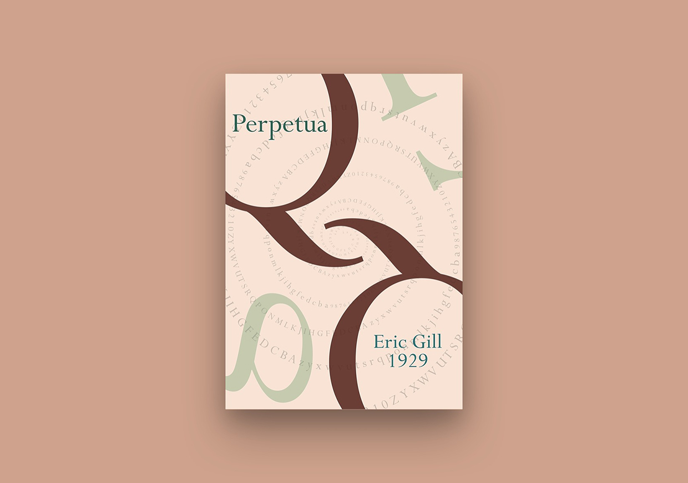

perpetua type study
type study
For this piece, I was assigned a typeface and asked to make a poster based off it. I was asked to include the alphabet, and numbers as well as some special characters. I had to also highlight some key features of the typeface, which in this case was the Q.